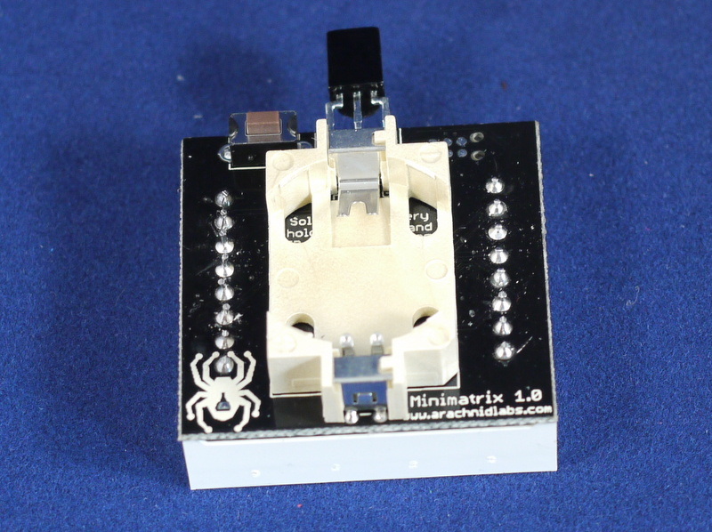

Assembling the minimatrix is very straightforward, and should only take a short time for even an inexperienced solderer. However, take care to read and follow the instructions below carefully, as it’s easy to put a part in the wrong way if you don’t pay attention!
First, insert the IR receiver. You should insert it from the side without components, facing so that when you bend it up, the curved part of the receiver will face forward - in the same direction as the components on the other side of the board. Insert the receiver and bend it close to the PCB, as depicted below.

Next, place the PCB flat on a table so the pins are sticking up, and solder all three, then chop off the extra leads. You’ll need to cut them quite close to the PCB to ensure the matrix fits flush with the PCB later.

Now, place the switch and battery holder. The switch can go either way around, and the battery holder will only fit one way around. Place the PCB on its back again - so the switch and battery holder are on the bottom - for soldering. The switch will hold itself in, but you’ll need to hold the battery holder in place as you put it down.
Carefully solder both parts.

Next, clip the leads from the battery holder and button quite short. When you turn the PCB over, it should now look like this:

Finally, take the LED matrix out of the foam it shipped in, and put its pins through the holes on the PCB. It goes on the side with the IC and other surface mount parts, and the colored dot on the matrix should be at the end with the IR receiver. Place the board matrix down and solder, then clip, the 16 pins for the LED matrix.

You’re done! Insert a coin cell battery, and it should start right up!
Next, you might want to read the owner’s manual.